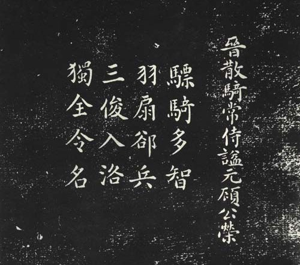
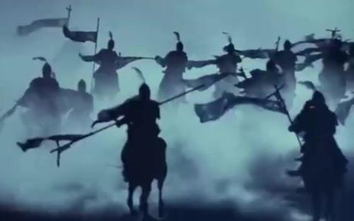

-

顾荣挥扇退敌军
顾荣是东吴丞相顾雍的孙子，早年和爷爷一样在东吴效力于孙家，西晋灭吴后继续到洛阳效力于司马家。永嘉之乱后，拥护司马政权南渡建立东晋王朝的江南士族首脑，就是顾荣。晋元帝司马睿出台任何政策法令之前，都会事先与其商议。不久，陈敏率兵叛变，顾荣面对敌军万人，气定神闲，羽扇一挥吓退敌人。 -

温峤率军战顽敌
温峤出身太原温氏，初授司隶都官从事，入刘琨幕府积功至司空左长史。西晋灭亡后作为刘琨的信使南下劝进，在东晋历任显职，与晋明帝结为布衣之交。他先后参与平定王敦、苏峻的叛乱，官至骠骑将军、江州刺史，封始安郡公。咸和二年，庾亮欲削除历阳内史苏峻的兵权，不顾温峤多次致信劝阻，征召苏峻入朝为大司农。温峤担心苏峻谋反，遂请求率军入卫建康，以备不测之变，结果又被庾亮拒绝。不久，苏峻果然起兵叛乱，进攻建康。温峤由武昌进屯寻阳（治今江西九江），命督护王愆期、西阳太守邓岳、鄱阳太守纪睦等人率水师援救建康。 -
朱元璋与沈万三的恩怨
明代洪武年间建造聚宝门城门楼的时候，意外发生，城门楼建造到一半的时候突然地基下陷，以致整个城门楼倒塌，工匠又从头修起，可修到一半地基仍然下陷，城门楼依然倒塌，反复建造依然建筑不成。明太祖朱元璋知道了这件事，于是令谋士算卦，说城墙基础有怪兽专门吃土吃城墙砖，需要在城下埋一个聚宝盆以镇压，怪兽吃土时候立即生出新土补充以保证城墙基础不下陷，至此明太祖朱元璋终于找到了干掉沈万三的理由，立刻下旨征收沈万三的宝物聚宝盆。明太祖还假惺惺承诺沈万三说“三更借。五更还。”征收来聚宝盆后，将聚宝盆埋压在城门基础的土层下面。果然了，城墙基础没有再次下陷，保证了城墙没有再倒塌。明太祖就是以各种理由强征的聚宝盆，本来就没打算归还。